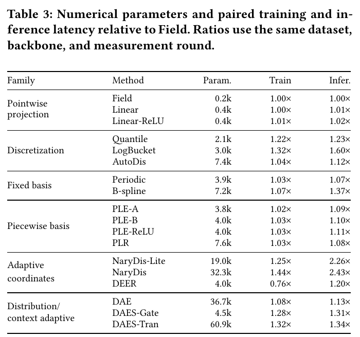
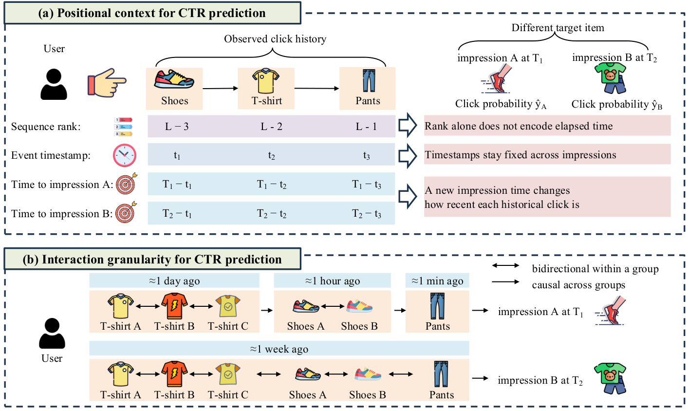
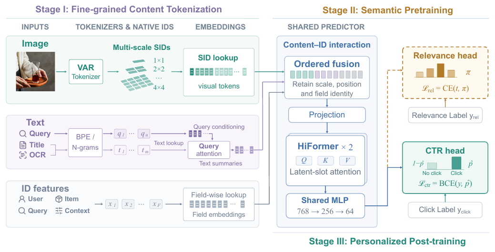
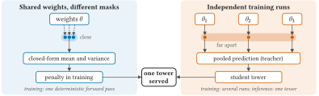
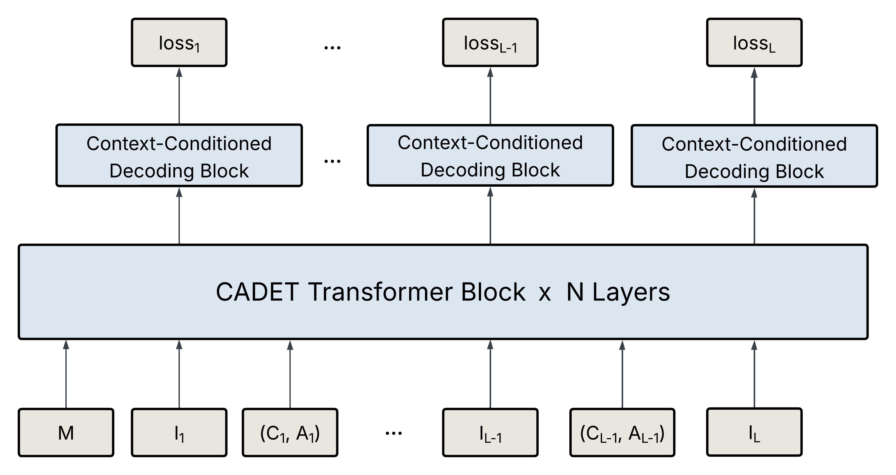
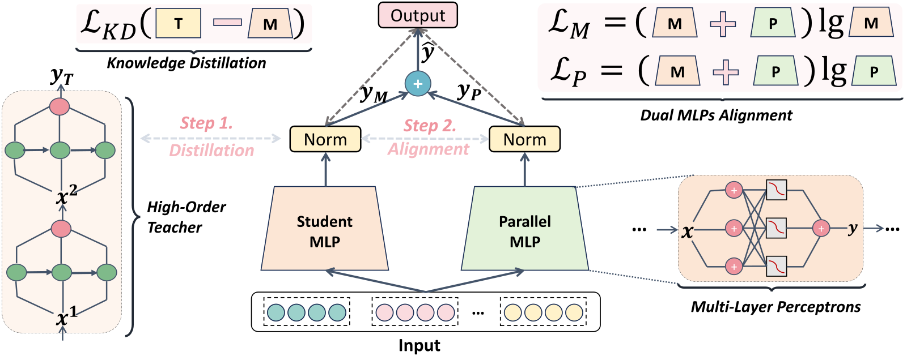
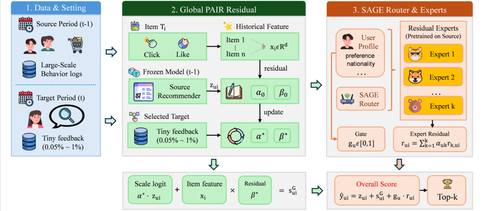

Contents · 8 sections
1The problem: one price field can be encoded in several ways2How the comparison works: fix everything that can vary3Result one: DEER is the most stable, but it does not win everywhere4Result two: change the input scale and the winner can change5Result three: accuracy and cost do not move together6Limitations I see7How a recommendation team could try this8VerdictSHARE
There are a dozen or so ways for a CTR model to turn numerical features such as prices and counts into vectors, and in one fair comparison no single method wins everywhere. This used to be hard to compare, because papers differ in preprocessing and training pipelines. This paper puts 18 of them into one codebase with the same tuning budget and compares them on 3 datasets and 9 backbone models. DEER (in the adaptive-coordinates family of the paper's Table 1) has the best overall rank, but change the dataset or the backbone and the leader can change. When the inputs switch from standardized values back to their original scale, the winner changes in 11 of 27 settings. Accuracy and inference latency also do not rise and fall together.
The value of this paper lies in the comparison itself, not in a new encoder. A single paper's claim that its encoder is better may come only from a different preprocessing step or backbone, and the authors fix those factors with one interface and one budget, which makes the conclusions credible. The limits are also clear: there are only 3 public datasets, two of them from the same source, which is still far from an industrial feature stack.
1. The problem: one price field can be encoded in several ways
First, what is numerical feature encoding? Categorical features (user ID, item ID) look up a vector in a table. Numerical features are different: they have size and order, and 99 yuan and 100 yuan should get similar representations. A numerical encoder is a small module that turns a single number into a fixed-length vector. In this paper, the value of every numerical field passes through the encoder and becomes a 16-dimensional vector, and the backbone (DNN, DCNv2, DeepFM and so on) receives this vector instead of the raw number. Each encoder has its own parameters, from about 0.2k for Field to about 60.9k for DAES-Tran (see the paper's Table 3 below), and they are trained together with the backbone on the click-prediction objective.

The paper groups the 18 configurations into 6 families by what intermediate coordinates a number is first turned into, not by results. Here is a price field to make the differences concrete. Suppose prices are split into three intervals, 0–50, 50–100 and 100–200 yuan (illustrative):
| Approach | What 99 yuan and 101 yuan get (illustrative) | Smooth for neighbouring values? |
|---|---|---|
| Pointwise projection (Field, Linear) | Field multiplies one field vector by 99 and by 101; Linear first applies a small learnable transform to the value | Smooth, but limited in what it can express |
| Hard buckets (Quantile, LogBucket) | 99 falls into the second bucket and 101 into the third, and each looks up a bucket vector | Not smooth: the vector jumps when the value crosses the boundary at 100 |
| Soft assignment (AutoDis) | Instead of picking one bucket, it keeps a set of learnable reference vectors; a small network that reads only the number scores each reference vector, and the scores are normalized into weights for a weighted sum (see below) | The weights change gradually with the value, so does the vector |
| Piecewise coordinates (PLE) | One coordinate per interval; see the example below | Smooth, and it only changes inside the interval holding the value |
The reference vectors in AutoDis (called meta-embeddings in the AutoDis paper and prototypes in this paper) each stand for a typical range of values. In the original AutoDis paper (Guo et al., 2021), a number first goes through a small network that reads only the number and directly gives each reference vector a score. The reference vectors themselves take no part in this scoring. The scores are then normalised into weights that sum to 1, and the output is the weighted sum of the reference vectors.
The "local coordinates" of the piecewise family follow the definition in the original PLE paper (Gorishniy et al., 2022). Each interval gets one coordinate: intervals the value has already passed get 1, intervals it has not reached get 0, and the interval holding the value gets how far into it the value is. 99 yuan is (99−50)/(100−50)=0.98 of the way into the second interval, so its coordinates are (1, 0.98, 0); 101 yuan is (101−100)/(200−100)=0.01 of the way into the third, so it gets (1, 1, 0.01). Crossing the 100 boundary moves the coordinates only slightly, with no jump as in hard bucketing. The interval boundaries come from training-set statistics (Statistics is Yes for this family in Table 1). A learnable linear layer then turns these coordinates into a 16-dimensional vector. The paper tests three configurations, PLE-A, PLE-B and PLE-ReLU. The benchmark also places PLR (another encoder from the original PLE paper) in this family; in Gorishniy et al. (2022), PLR is periodic features followed by a linear layer and a ReLU. Hoot says

- 99 yuan is (99−50)/(100−50)=0.98 of the way into the second interval (50–100); the first interval is fully passed, so 1; the third is not reached, so 0.
- 101 yuan is (101−100)/(200−100)=0.01 of the way into the third interval (100–200); the first two intervals both get 1.
- How big is the change: the second coordinate goes from 0.98 to 1, a difference of only 0.02; the third goes from 0 to 0.01. Hard bucketing instead switches to a different bucket vector outright.
Illustrative: intervals of 0–50, 50–100 and 100–200 yuan, the same example as the text. Coordinates follow the original PLE paper (Gorishniy et al., 2022): 1 for intervals already passed, 0 for those not reached, and the fraction travelled in the interval holding the value.
Source
the price example in section 1 of the dive; interval boundaries and prices are illustrative.Of the remaining three families, the fixed-basis family (Periodic, B-spline) evaluates a set of fixed-form functions (for example sines or splines) at the number to get a list of coordinates, which a learnable mapping then turns into a 16-dimensional vector.
The most important method in the adaptive-coordinates family is DEER (Cheng, 2022), which has the best mean rank in this benchmark, so here is how it encodes a number, following the benchmark's released DEER implementation. DEER also splits the value range into buckets, with initial boundaries at quantiles of the training set. The difference is that each bucket's share of the value range is learnable. A softmax normalises these shares so they always sum to 1, so the two ends of the range stay fixed while the inner boundaries move during training. Each boundary point also has its own learnable 16-dimensional vector. To encode a number, DEER finds the two adjacent boundaries it falls between and computes how far along that segment it sits, a fraction between 0 and 1. It then averages the two boundary vectors with weights set by that fraction to get the number's 16-dimensional vector. For example, a number 30% of the way along its segment gets 0.7 of the left vector plus 0.3 of the right vector (illustrative). During training, the click-prediction loss updates the two boundary vectors directly. The bucket shares get their gradient through the position fraction, because moving a boundary changes it. The same family also includes NaryDis (Chen et al., 2022). The distribution/context-adaptive family has DAE (Shen et al., 2023) and DAES (Liu et al., 2026), again described from the released implementation. During training, DAE computes 32 quantile points of the field in each batch and keeps a running average of them; evaluation uses the accumulated result. To encode a number, it computes the distance from the number to each of the 32 quantile points, passes these distances to a small network for scores, normalizes the scores into weights, and takes the weighted sum of 32 learnable vectors. DAES estimates the quantile points during training with reservoir sampling, then produces a string of local coordinates like PLE does, except that the interval boundaries are these quantile points. It also averages the vectors of a few selected categorical fields to form a context. The Gate configuration gives each coordinate a learnable vector; its dot product with the context vector goes through a sigmoid to give a coefficient between 0 and 1, which multiplies that coordinate. The Tran configuration gives each cell of a square matrix its own learnable vector, and the cell value is that vector's dot product with the context vector. Multiplying the coordinates by this matrix and applying a sigmoid gives the new coordinates. The adjusted coordinates are then mixed with the original coordinates in a fixed proportion set by each configuration and used as weights for a weighted sum of a set of learnable vectors. Like every other method, the methods of these two families run through the same FuxiCTR plugin interface. NaryDis ranks low in this benchmark (NaryDis-Lite averages 13.44) and is the slowest at inference, so the rest of this dive mentions it only in the cost section.
This grouping matters later: methods in the same family can perform very differently. Even methods in the same family that both use training statistics can react completely differently to input scale; Section 4 returns to this.
2. How the comparison works: fix everything that can vary
The authors built one plugin interface on FuxiCTR. All encoders take the values of each numerical field from this interface,. The output is always one 16-dimensional vector per field. Swapping encoders therefore requires no change to the backbone.
The comparison has four steps:
- Unify preprocessing. On the main leaderboard, every encoder first applies the same z-score standardization to numerical values. The statistics come only from the training set, so nothing leaks from validation or test data.
- Unify the tuning budget. Each method's candidate configurations are declared in advance, and every method gets the same tuning budget. Configurations are selected on validation results only; the test set never takes part. Once selected, the configuration is frozen and is not re-tuned when the backbone changes.
- Run the full matrix. The frozen configurations run on 3 datasets, 9 backbones and 5 random seeds, 2,430 training runs in total. Five seeds keep the conclusions from depending on the random noise of a single run.
- Run two extra tests. One switches the inputs back to their original scale (for example, click counts stay as raw values in the thousands or tens of thousands) without retuning, to see whether the ranking changes. The other measures training and inference time on the same idle GPU.
The original-scale test in step 4 asks a practical question: if the production feature pipeline does not standardize, do the main leaderboard's conclusions still hold? The shared tuning budget is just as important. A method tuned separately for every setting would have an unfair advantage, so the authors pick a single global configuration per method.
3. Result one: DEER is the most stable, but it does not win everywhere
Across the 27 standardized dataset-backbone settings, DEER has a mean rank of 3.41 (the 18 methods are ranked by AUC within each setting and the ranks are averaged over 27 settings; lower is better) and wins 14 settings. The runner-up, PLE-B, has a mean rank of 5.30. Statistical tests confirm that the methods really differ. So if you can pick only one default, DEER is a reasonable starting point.
A closer look shows it does not win everywhere. On Criteo, DEER wins 8 of 9 backbones; on AutoML-E, it wins only 1. Across all 27 settings, 6 different methods take first place at least once, and even the simplest, Field, wins 3 settings, which shows the dataset itself has a large effect on the conclusion.
Even pairwise orderings are unstable. On AutoML-A with DeepFM as the backbone, DEER's AUC is 0.7103, above Periodic's 0.6982; with FiBiNET, DEER gets 0.7063, below Periodic's 0.7110. These are only five-seed means, and these two gaps alone do not show which method is better. Still, they are a reminder that a leaderboard on a single backbone can easily turn a chance lead into an apparent rule.
The family label does not predict results either. Within the piecewise basis family, PLE-B ranks 5.30 on average while PLE-ReLU ranks 12.48. Within adaptive coordinates, DEER ranks 3.41 and NaryDis-Lite 13.44. Choosing an encoder means looking at the specific method and the specific backbone, not at the family.
4. Result two: change the input scale and the winner can change
When the inputs switch back to the original scale with everything else unchanged, the winner changes in 11 of 27 settings. Most of these settings are on AutoML-E (7 of them), so the effect of scale depends on the dataset rather than moving all results up or down together.
The ordering of the methods is also only partly preserved. Within the same setting, the correlation between the 18 methods' ranks under the two scales averages only 0.369, while identical orderings would give 1.
Some methods are very sensitive to scale. On AutoML-E with AutoInt, PLE-B's AUC falls from 0.8411 to 0.5000, which is the same as random guessing, while B-spline is almost unaffected. Of the 486 original-scale results, 57 have AUC below 0.55: 43 on AutoML-E, 14 on AutoML-A and none on Criteo. After standardization there are none.
This shows preprocessing and encoder are tied together, and any encoder comparison must state its preprocessing. For engineering teams, it means that changing the feature pipeline requires re-validating the encoder choice as well. Note that this is a transfer test without retuning, and tuning separately on the original scale might recover part of the loss.
5. Result three: accuracy and cost do not move together
The paper measures training and inference time on the same GPU, as multiples of Field. DEER needs only 0.76 times Field's training time but 1.20 times its inference time. The NaryDis variants take more than twice Field's inference time.

Parameter count does not predict latency either. DAE has 36.7k parameters and is only 13% slower at inference; NaryDis-Lite has just 19.0k parameters but takes 2.26 times as long. So cost must be measured directly as latency, not approximated by parameter count. The runner-up PLE-B is only 10% slower at inference and is worth comparing under a tight latency budget. But when its chosen configuration is moved to the original scale, it falls to about 0.50 AUC in all 9 AutoML-E settings, so a pipeline without standardization should retune and validate it at that scale before deciding.
6. Limitations I see
- Few and dependent datasets. There are only 3 datasets, and AutoML-A and AutoML-E come from the same source, so they are not really two independent domains. The largest has 23 numerical fields, far from the hundreds or thousands of numerical features in industrial models.
- No separate tuning at the original scale. The 11 changed winners and the 57 results below 0.55 all come from reusing configurations chosen under standardization, so they do not prove a method cannot work at the original scale.
- Latency reflects only the released implementations. The timings use eager-mode FP32 code, and the ratios may change after operator fusion or dedicated optimization.
7. How a recommendation team could try this
- Audit how existing numerical features are preprocessed, and check that serving and training match.
- Make the encoder a replaceable module with a fixed input and output interface, leaving the backbone untouched.
- Start with two candidates, DEER and PLE-B, plus the current approach as the baseline, and compare them offline under the same tuning budget. If production features are not standardized, retune PLE-B at the original scale before comparing it.
- Record AUC, training time and inference time together, and choose according to the latency budget.
- Look at results by data slice rather than only overall AUC. In the paper, the same method ranks very differently across datasets, and numerical distributions in different scenarios of your own product may differ just as much.
- If production features are not standardized, run a separate comparison at the original scale to avoid AUC collapsing to 0.5.
Verdict
| Dimension | Assessment |
|---|---|
| Importance of the problem | High: numerical features are everywhere, and their encoding is often chosen casually |
| Novelty of the method | Medium: the contribution is a fair comparison framework and an open plugin, not a new method |
| Strength of evidence | Fairly strong: 2,430 training runs plus the original-scale test, but few datasets |
| Engineering cost | Low: the plugin interface can be reused directly |
| Worth trying | Yes: at least re-compare your own encoders with its protocol |
How did this read for you?
Hoot made a note. Thanks for the feedback.
One tap, no sign-in; tap again to undo. Only anonymous counts are kept, never who you are.
Related papersMore from Paper Daily
 Personalization · 2026-10-28Towards a Unified Framework of Optimal Input-Side Dimensional Configuration for Deep CTR PredictionThere are three common ways to trim the input side of a CTR model: drop low-quality training samples, switch off useless features, and prune useless embedding dimensions. Earlier methods do one at a time. This paper from Shenzhen University and collaborators argues that all three are the same operation, multiplying one embedding tensor by a mask at different granularities. They also interact: onc…
Personalization · 2026-10-28Towards a Unified Framework of Optimal Input-Side Dimensional Configuration for Deep CTR PredictionThere are three common ways to trim the input side of a CTR model: drop low-quality training samples, switch off useless features, and prune useless embedding dimensions. Earlier methods do one at a time. This paper from Shenzhen University and collaborators argues that all three are the same operation, multiplying one embedding tensor by a mask at different granularities. They also interact: onc…
Personalization · 2026-10-29Rethinking Positional Encoding and Interaction Granularity for CTR PredictionIn unified Transformer CTR models like OneTrans, the authors tried six positional encodings on Kuaishou's KuaiRand data, and none beat using no positional encoding at all. Building on this, the Wuhan University and Tencent paper proposes TRIP (the authors' name for the whole method). Each behavior encodes both its rank in the sequence and how long before this prediction it happened. Behaviors are…
Personalization · 2026-10-23Progressive Learning from Content to Relevance to Personalization for CTR PredictionTaobao search CTR models mainly remember historical clicks through item IDs, so the same item with a different main image is almost indistinguishable to the model. FineSID turns each item image into 30 discrete codes across four VAR tokenizer scales from 1×1 to 4×4, tokenizes titles and OCR text by field, and looks them all up like ordinary ID features; the shared network is first trained on quer…
Personalization · 2026-10-21FLMNet: Self-Ensemble Distillation from Masks to Seeds for Single-Tower CTR PredictionCTR self-distillation can be replaced with a computable disagreement penalty. FLMNet keeps gates on clean inputs and distills independently trained towers into one serving model. The distilled model reaches 0.8169 AUC on Criteo.
Personalization · 2026-08-31CADET: Context-Conditioned Ads CTR Prediction With a Decoder-Only TransformerDeep dive: CADET: Context-Conditioned Ads CTR Prediction With a Decoder-Only Transformer.
Personalization · 2026-08-21Dual-Stream MLP is All You Need for CTR PredictionDeep dive: Dual-Stream MLP is All You Need for CTR Prediction.
Personalization · 2026-11-10SAGE-PAIR: Source-Pretrained Routed Residual Adaptation for Sparse-Feedback RecommendationWhen a recommender moves into a new serving window, the target window often has too little feedback to retrain the live model. This paper freezes the original model and adds only a residual: the item features are click and like rates in the source window (exactly two dimensions), and the expert basis is a small set of anchors in that same plane. A soft router weights those anchors from the user's…
Discussion
Add experiment details, reproduction notes or a different take. Requires a GitHub sign-in.
Loading the discussion…